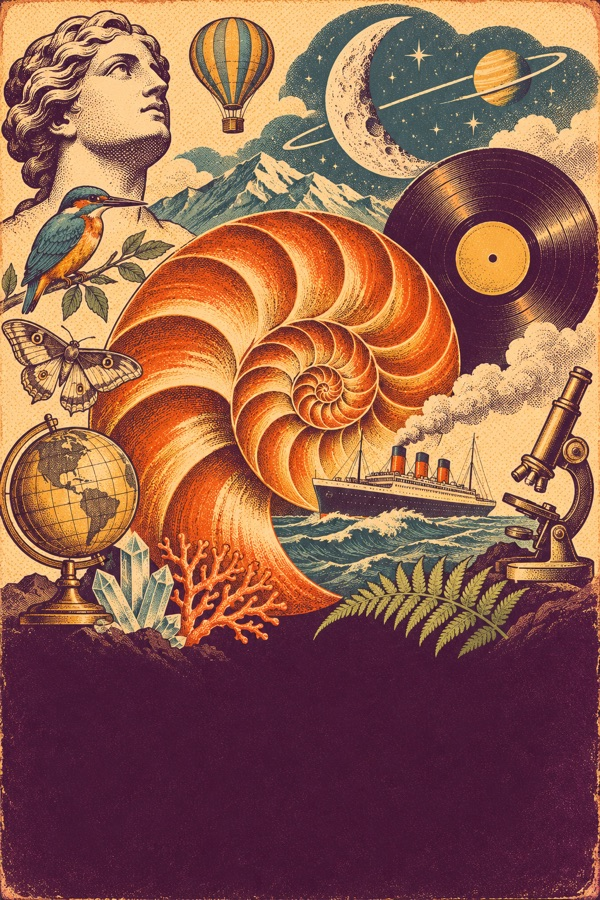

Play a round
Play the same round
Have a friend read you their round code. Each device keeps its own score.
Your rounds
Question index
About the curiosity archives
Archive questions adapt facts from Wikipedia’s Did you know? collection into trivia clues. Explanations include shortened article introductions. Each archive card links to the article revision and the original fact. These adaptations credit Wikipedia contributors and use the Creative Commons Attribution-ShareAlike 4.0 license.
How did you do?
Browse by question number. Your round is saved.
Return to your round